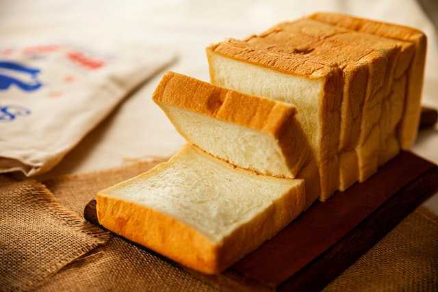
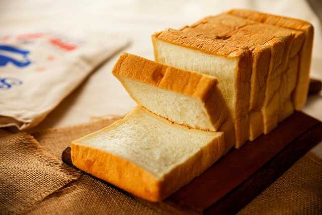

Overview
Purpose
The Global Grilled Cheese Coalition would be a website dedicated to grilled cheese sandwiches, how to make them, where to find them, and how to identify them.
Audience
Individuals seeking to engage with the larger global grilled cheese community, enthusiast, or those simply seeking to learn about the art and craft of grilled cheese sandwiches.
Why will people come to your site?
This site is a useful online resource for anyone seeking to connect with the larger global grilled cheese sandwich community. Anyone seeking to learn more about grilled cheese sandwiches, how to make them, and other info on the subject would be benefited by visiting this site.
What questions will your visitors expect your site to answer for them?
Some questions that would be answered on this site include the following. What is a grilled cheese sandwich? Who invented the grilled cheese? What makes grilled cheese distinct from other types of sandwiches? How do I make a grilled cheese sandwich?
What types of activities will visitors want to complete on your site?
Visitors would come to this site seeking information, and to be educated about grilled cheese sandwiches. They could learn about the history of the sandwich, how it’s made, and why the sandwich is so essential.
What information is necessary to complete any actions your site offers?
No information is really necessary to complete actions on this site, an introductory level of understanding of sandwiches might be required however.
Why will your visitors come to your site instead of another to get this information or complete the actions?
This site would not only be detailed, but accessible and thorough in its exploration of the grilled cheese sandwich and its importance to the global community. It would have a simple, easily readable site plan as well as a concise message to the world. Grilled cheese sandwiches and nothing else.
Site Page Overview
Main Page
On the main page would be a site welcome and a brief introduction to the mission plan of the Global Grilled Cheese Coalition. There would be a mission statement for the GGCC, and a basic overview of what to find on the site. Planned images:

Info Page
The info page would contain a brief history of the grilled cheese sandwich, what defines a grilled cheese sandwich from other types of sandwiches, and a brief overview of some grilled cheese sandwich facts. Planned images:

Recipe Page
On the recipe page be some recipes for grilled cheese sandwiches and some ideas for serving and plating. Planned images:
 


Branding
Website Logo
Style Guide
Color Palette
Palette URL:
https://coolors.co/a54827-f9d234-f9f9f9-2a773f| Primary | Secondary | Accent 1 | Accent 2 |
|---|---|---|---|
| [#2a773f] | [#a54827] | [#f9f9f9] | [#f9d234] |
Typography
Heading Font: Georgia
Paragraph Font: Helvetica
Normal paragraph example
The Grilled Cheese Sandwich: The Grilled Cheese Sandwich is a type of sandwich which consists of two slices of sandwich bread with a layer of cheese in the middle. Traditionally, the sandwich is then cooked in a pan or on a griddle with butter or another type of oil until the cheese has been melted and the bread sufficently browned.
Colored paragraph example
While there is no one true way to make a grilled cheese sandwich, there are some important distinctions to make between it and other types of hot sandwiches. Grilled cheese sandwiches only have one interal structural ingredient: cheese. While condiments such as mayo or mustard can be included within the sandwich, items such as sandwich meats or vegtables cannot be included while also maintaining the grilled cheese sandwich taxonomy.
Navigation
Site Map
Wireframes
Home